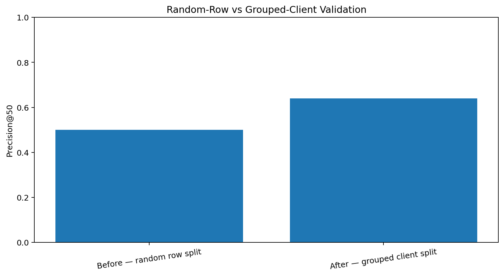
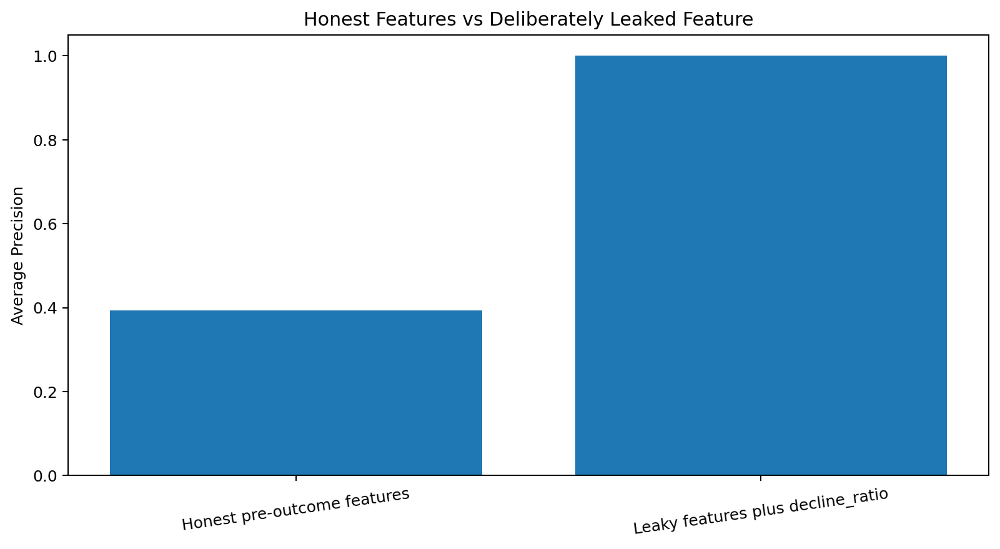

Abstract
This study asks whether historical search-performance signals can prioritise eligible content pages for human review. Using 9,841,378 anonymised daily observations from March 2026, the study creates one client-page row from an earlier feature window and evaluates a later impression-decline proxy. A transparent frozen baseline, Logistic Regression, and Random Forest are evaluated on the same grouped-client holdout with zero client overlap, while a deliberate future-derived feature audits leakage. Logistic Regression measured Precision@50 of 0.640 compared with 0.520 for the baseline and 0.540 for Random Forest, and the invalid leaked feature raised Average Precision from 0.3939 to 0.9999. The result is observational and directional and supports a reason-coded human-review queue rather than automatic editing, causal refresh claims, or guaranteed performance improvement.
Publication Status
Zafar Ullah (corresponding)
Afaq Ahmad Khan
1.3 (Pre-DOI)
2026-07-30
CC BY 4.0
16 pages · SHA-256 4cebc24bcb41f8b9…
Corresponding email:
zafarullah1385@gmail.com
Co-author email:
khanafaqahmad33@gmail.com
Introduction and Problem Statement
Large websites can contain more pages than a content team can inspect in one cycle. The supported decision is what a person should inspect first.
Research Gap
The reviewed literature provides limited evidence of one reproducible workflow that jointly combines anonymised multi-client search data, separated feature and outcome windows, grouped-client validation, a frozen operational baseline, explicit leakage auditing, ranking-oriented evaluation, and human-reviewed actions.
Data
Features use March 1–15, 2026 and the later proxy uses March 16–31, 2026. Public artifacts exclude client names, domains, URLs, raw queries, credentials, and IDs.
Methodology
Seven prediction-time features are used. The frozen baseline combines 70% CTR weakness and 30% visibility. Logistic Regression and Random Forest are compared on the same grouped-client holdout.
Validation Design
| method | validation_rows | validation_clients | client_overlap | base_rate | precision@50 | average_precision | roc_auc |
|---|---|---|---|---|---|---|---|
| Before — random row split | 8510 | 29 | 26 | 0.3089 | 0.50 | 0.4075 | 0.6317 |
| After — grouped client split | 15963 | 8 | 0 | 0.3008 | 0.64 | 0.3939 | 0.6175 |
Leakage Audit
The honest model excludes future fields. A deliberately leaked outcome ratio is shown only to demonstrate invalid performance inflation.
Results
| method | base_rate | precision@20 | precision@50 | lift@50_vs_base_rate | average_precision | roc_auc |
|---|---|---|---|---|---|---|
| Logistic Regression | 0.3008 | 0.50 | 0.64 | 0.3392 | 0.3939 | 0.6175 |
| Random Forest | 0.3008 | 0.40 | 0.52 | 0.2192 | 0.3909 | 0.6211 |
| ML-07 Baseline | 0.3008 | 0.55 | 0.52 | 0.2192 | 0.3776 | 0.6059 |




Limitations and Honest Framing
On one grouped-client holdout, Logistic Regression measured a Precision@50 of 0.640, compared with 0.520 for the frozen baseline, an absolute measured difference of 0.120. This observed result supports directional human decision-support for content-review prioritisation within the March 2026 evaluation design. It does not establish causal refresh impact, guarantee future performance, or support automatic content changes.
The target is a retrospective proxy, not content quality. No content intervention, conversion, revenue, or causal experiment was performed.
Ranked Recommendations
| action_label | reason_code | pages | observed_decline_rate_pct | median_priority | estimated_review_hours | claim_status |
|---|---|---|---|---|---|---|
| MONITOR | LIMITED_FEATURE_HISTORY | 26 | 65.38 | 46.64 | 4.33 | INSUFFICIENT_N_FOR_HEADLINE |
| CTR_REVIEW | CTR_GAP_HIGH_VISIBILITY | 147 | 53.06 | 70.85 | 49.00 | DESCRIPTIVE_WITH_N |
| REFRESH_REVIEW | HIGH_RISK_HIGH_VOLATILITY | 706 | 44.48 | 58.22 | 1059.00 | DESCRIPTIVE_WITH_N |
| REFRESH_AND_PROTECT | HIGH_RISK_STABLE_PAGE_1 | 546 | 42.86 | 58.54 | 682.50 | DESCRIPTIVE_WITH_N |
| MANUAL_REVIEW | HIGH_RISK_NO_CLEAR_ARCHETYPE | 934 | 41.76 | 58.40 | 467.00 | DESCRIPTIVE_WITH_N |
| MONITOR | BORDERLINE_MEASURED_RISK | 8412 | 32.14 | 58.72 | 1402.00 | DESCRIPTIVE_WITH_N |
| NO_IMMEDIATE_ACTION | LOWER_MEASURED_PRIORITY | 4809 | 21.52 | 46.86 | 0.00 | DESCRIPTIVE_WITH_N |
| PROTECT | LOW_RISK_HIGH_VISIBILITY | 382 | 7.59 | 50.47 | 95.50 | DESCRIPTIVE_WITH_N |
| EXPAND_AND_OPTIMISE | HIGH_VALUE_PAGE_2 | 1 | 0.00 | 71.46 | 2.00 | INSUFFICIENT_N_FOR_HEADLINE |


Reproducibility
The repository contains the complete capstone notebook, public-safe aggregate receipts, fitted pipeline, figures, and publication metadata.
Declarations and AI Assistance Disclosure
Author Contributions
Z.U. conceived the study, implemented the analysis, conducted validation and interpretation, prepared the visualizations, and drafted the manuscript. A.A.K. contributed to the literature review, methodological discussion, and manuscript review. Both authors reviewed and approved the final manuscript.
Generative AI Assistance
Generative AI tools were used during early code drafting and for limited suggestions on manuscript organization and language. The authors subsequently rewrote the narrative, checked numerical claims against executed notebooks and aggregate receipts, reviewed the cited sources, and accept responsibility for the submitted text and analysis.
Acknowledgments and Data Credit
Built on the FlyRank ML Internship dataset .